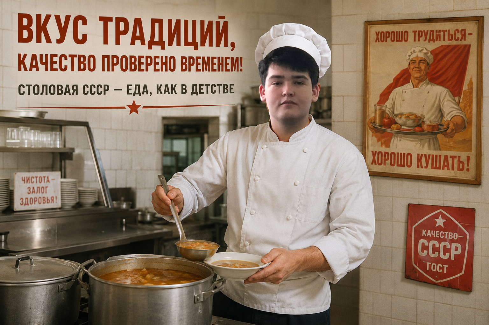

Наш шеф-повар гарантирует: качество проверено временем, а цены — строго по ГОСТу!
Посмотреть меню
Никакой химии. Только натуральное мясо, каспийская рыба, свежие овощи и масло по рецептурам 1955 года.
Сытный комплексный обед доступен любому рабочему, студенту и труженику Астрахани.
Каждая точка оборудована сплит-системами, чтобы победить астраханскую жару!
ул. Кирова, д. 5
08:00 – 20:00
ул. Беринга, д. 2
07:00 – 21:00
ул. Татищева, д. 16 (около АГТУ)
08:00 – 18:00